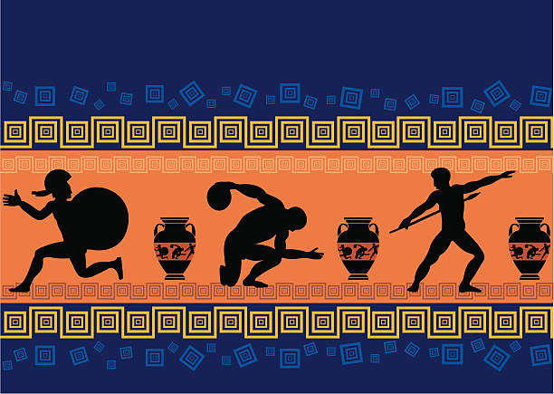

L’athlétisme est considéré comme l’un des plus anciens sports du monde. Ses origines remontent à la Grèce antique, avec les premiers Jeux olympiques organisés en 776 avant J.-C.
Au fil des siècles, ce sport s’est développé pour inclure plusieurs disciplines comme les courses, les sauts, et les lancers.
Aujourd'hui, l'athlétisme est une discipline majeure aux Jeux olympiques modernes et dans de nombreuses compétitions internationales.
Les disciplines de l’athlétisme se divisent en trois grandes catégories : les courses (vitesse, haies, fond), les sauts (hauteur, longueur, perche), et les lancers (poids, disque, javelot).
Les épreuves combinées comme le décathlon et l’heptathlon regroupent plusieurs de ces épreuves et nécessitent une grande polyvalence.
Chaque athlète se spécialise souvent dans une discipline pour optimiser ses performances.

| Catégorie | Exemples |
|---|---|
| Courses | 100m, 400m, 1500m, haies |
| Sauts | Hauteur, longueur, perche, triple saut |
| Lancers | Poids, disque, javelot, marteau |
Pour en savoir plus, consulte les sites suivants :